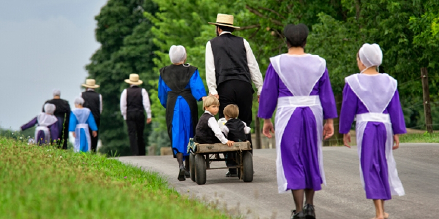

Gelassenheit is the German word for being yielded to God’s will, and in more modern translations, serenity. Ordnung, is the German word for order and discipline. The Amish believe that Ordnung is a tool to producing Gelassenheit. Discipline and a simple way of life will lead to living in God’s will and serenity. Gelassenheit places emphasis on obedience. Rumspringa is a time for young people to gallivant, explore, and find a mate. With this freedom they can make their decision to remain in the Amish community or leave it.
A major clue to the Amish's survival is their mobile sancturary. Every other Sunday church service is held in a different Amish home. This embodies Getassenhut. The reason a church district never excedes 50 families is because that is the maximum number of people that any family home can accomodate on Church Sunday. Young married couples sign up to take their turn hosting church services during one of the warm months because generally their houses are smaller. Overflow can sit outside. Or church services may be held outside completely. If this is done then tree trunks will be whitewashed six feet up from the ground. The Amish hold church services every two weeks. Those Sunday services are called "Church Sunday" and last about three hours each. Baptisms, confession,
When the Amish buy a farm from a an Englischer it takes them five years to build the soil back up as a result of being depleted by the use of commercial fertilizers. To an Amish farmer his relationship with soil has spiritual meaning. The land is not to be sold or exploited. Rather, it is revered. In fact the Amish have a saying, "good soil makes a strong church." The condition of the Amish's land is believed to be a reflection of the Amish people. The average Amish farm is forty acres because that is the size that's manageable when working the land with horses or mules. In other words, the horse limits the size of Amish farms. The Amish family farm is a place to live, raise a family, to be as self-sufficient as possible growing as much food as they can. Work is a moral directive for all Amish. Profits are plowed back into the land so the next generation can live, raise and support their family on it. Amish families enjoy their work. and liesure but their love of work is predominant because they believe work binds the individual to the church, group and family. Work is perceived by the Amish as a calling, not a personal career. Amish believe that labor saving technology undermines the sacred ritual of work. And one of the pluses of plowing a field with a horse rather than with a tractor is that the Amish farmer can get into their fields earlier in the spring. Thats because horses pack the ground less then tractors do. Horses in the field protect the Amish identity, tractors in the farmyard keep them competitive. Many settlements allow the owning of a tractor but the wheels must be removed, then the tractor is loaded on a wagon and is pulled place to place by work horses. The tractor is used for its belt power. Field and farmyard work unfolds as follows:
The Amish are a patriarchal society. The male is the head of the family and men take on visible roles. Women are also respected for their contributions as wives and mothers. The role of a husband among other things is to earn income and deal with outside issues.
In preparation for church services women play an important role by preparing their homes. Women also vote during church decision making.
Under Amish views divorce is consider a sin and is forbidden. Marriage is founded more on respect rather than romance.
Wives are expected to obey and yield to the decisions of their husbands as long as it doesn’t conflict with the Ordnung. The wife’s role as the caretaker of the children and the home is respected.
When children start their eight years of schooling they are referred to as scholars. Amish children are bi-lingual with their primary language being Pennsylvania Dutch. They don't start speaking English until the year prior to starting first grade. Amish parents don't want people speaking English to their young children until that time. Amish communities build and maintain their own one room school houses. As the name infers, all eight grades are taught by one teacher in one schoolroom. There is just one teacher and she's usually a teenage girl or sometimes an unmarried woman. School teachers in Amish communities are on the fringe of the community's formal leadership structure with the Bishop, ministers and deacons being at the very top. The Amish believe that its more important for their children to develop wisdom and understanding then to memorize and know facts based on book learning. They believe wisdom is gathered through personal and group experience and not from education that continues above the level of 8th grade.
The Amish travel by horse and buggy. This mode of transportation symbolizes the standards of the Amish community as a whole unlike the cars in the modern world which symbolize individualism. The horse has acted as a means to mark off and protect the boundaries of the Amish culture. Horses are considered the heartbeat of the Amish community. Using horse and buggies/carriages for transportation means the Amish are limited in how far they can travel. That means they are more apt to do business in a small town then to travel to a larger metropolis say to shop at a WalMart. The Amish are good for the economy of small rural towns. If the Amish have to travel longer distances, they will hire somebody with a car, truck or van to transport them. There are six different types of vehicles used within the Amish culture. There is the open buggy sometimes call the courting buggie. The spring wagon is used for farming. It has extra spring suspension because it's used for hauling heavy supplies on the road. The market wagon is enclosed and is the equivalent of the family station wagon or minivan. The tailgate swings open and the back seat can be removed. It has a heavier suspension and is used to haul produce to the marketplace. The cab wagon is the equivalent of a pickup truck. The back wagon bed is open while the front has an enclosed cab. The two wheeled cart. Finally the standard carriage.This is the family car. The color varies depending on the community. A carriage has an enclosed box made out of plywood with 2 bench seats. It can hold 6 or more passengers. It has sliding side doors with glass and a front glass windshield that the Amish call storm fronts. Amish ministers usually forgo the front windshield as a demonstration of how devout they are. Some carriages have a buggy box which is the equivalent of rumble seat in a car. Wives always ride in buggies on the left side of their husbands. Depending on the local laws these carriages may be required to have battery operated lights including turn signals, flashing rear lights, and a large red triangle reflector on back of carriage. These requirements are for the safety of the Amish and for people traveling the road in cars and trucks. Some Amish communities resist these regulations. Today there are over 100 variations in the style and color of Amish carriages. Each congregation chooses their own style. The most liberal drive black buggies. The most conservative drive white buggies. Yellow buggies lie somewhere inbetween. The Amish take good care of their horses. A person is accused of "Horse Pride" if he is overly concerned with how his horse looks. A poor horseman is identified by the "wear on his whip". "Drivers" are horses that pull buggies and are usually purchased from racetracks. Work horses are used for field work.